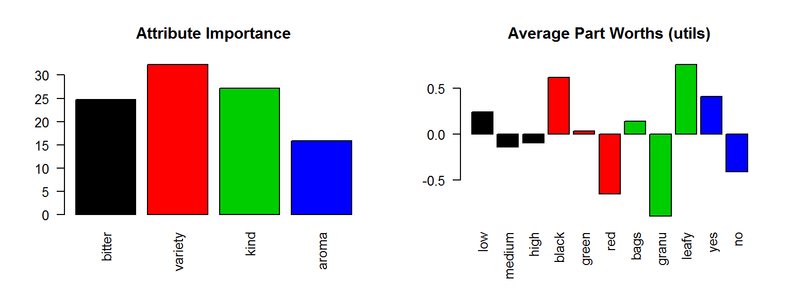

1 聯合分析
library(conjoint)
library(fpc)
library(grDevices)
library(latex2exp)
library(manipulate)
library(rAmCharts)
library(highcharter)
rm(list=ls(all=TRUE))
options(digits=4); par0 = par(cex=0.8)1.1 案例資料
這是一個茶包的產品設計案例，在這個品項的4個主要 屬性(Attribute) 裡面，
- bitter: low, medium, high
- veriety: black, green, red
- kind: bag, granu, lefty
- aroma: yes, no
一共有11個 選項(Levels) ：
levels = read.csv("../tea/levels.csv",stringsAsFactors=F)
levels## levels
## 1 low
## 2 medium
## 3 high
## 4 black
## 5 green
## 6 red
## 7 bags
## 8 granu
## 9 leafy
## 10 yes
## 11 no從這些設計選項之中研究人員設計出13張 卡片(Profiles) ：
profiles = read.csv("../tea/profiles.csv")
profiles## bitter variety kind aroma
## 1 3 1 1 1
## 2 1 2 1 1
## 3 2 2 2 1
## 4 2 1 3 1
## 5 3 3 3 1
## 6 2 1 1 2
## 7 3 2 1 2
## 8 2 3 1 2
## 9 3 1 2 2
## 10 1 3 2 2
## 11 1 1 3 2
## 12 2 2 3 2
## 13 3 2 3 2並邀請100位 受測者(Respondents) ， 請每一個人(依不同的卡片順序)對 每一張卡片(Full-Profile) 做 評分(Rating)
ratings = read.csv("../tea/ratings.csv")
dim(ratings); head(ratings)## [1] 100 13## prof1 prof2 prof3 prof4 prof5 prof6 prof7 prof8 prof9 prof10 prof11 prof12 prof13
## 1 8 1 1 3 9 2 7 2 2 2 2 3 4
## 2 0 10 3 5 1 4 8 6 2 9 7 5 2
## 3 4 10 3 5 4 1 2 0 0 1 8 9 7
## 4 6 7 4 9 6 3 7 4 8 5 2 10 9
## 5 5 1 7 8 6 10 7 10 6 6 6 10 7
## 6 10 1 1 5 1 0 0 0 0 0 0 1 1Make some auxilary data to assist plotting
col1 = c('magenta','steelblue','orange','green3','brown')
(att = apply(profiles,2,max) )## bitter variety kind aroma
## 3 3 3 2(attl = unlist(sapply(1:length(att), function(x) rep(x , att[x]))) )## [1] 1 1 1 2 2 2 3 3 3 4 41.2 屬性的重要性
計算各產品屬性的相對重要性
im = caImportance(y=ratings, x=profiles)
names(im) = names(att)
im## bitter variety kind aroma
## 24.76 32.22 27.15 15.881.3 選項的平均價值 (APW)
計算各設計選項的平均價值 APW (Average Part Worth):
apw = caUtilities(y=ratings, x=profiles, z=levels)##
## Call:
## lm(formula = frml)
##
## Residuals:
## Min 1Q Median 3Q Max
## -5,189 -2,376 -0,751 2,213 7,513
##
## Coefficients:
## Estimate Std. Error t value Pr(>|t|)
## (Intercept) 3,5534 0,0907 39,18 < 2e-16 ***
## factor(x$bitter)1 0,2402 0,1325 1,81 0,07 .
## factor(x$bitter)2 -0,1431 0,1149 -1,25 0,21
## factor(x$variety)1 0,6149 0,1149 5,35 1,0e-07 ***
## factor(x$variety)2 0,0349 0,1149 0,30 0,76
## factor(x$kind)1 0,1369 0,1149 1,19 0,23
## factor(x$kind)2 -0,8898 0,1325 -6,72 2,8e-11 ***
## factor(x$aroma)1 0,4108 0,0849 4,84 1,5e-06 ***
## ---
## Signif. codes: 0 '***' 0,001 '**' 0,01 '*' 0,05 '.' 0,1 ' ' 1
##
## Residual standard error: 2,97 on 1292 degrees of freedom
## Multiple R-squared: 0,09, Adjusted R-squared: 0,0851
## F-statistic: 18,3 on 7 and 1292 DF, p-value: <2e-16names(apw) = c('intercept', levels[,1])
apw## intercept low medium high black green red bags granu
## 3.55336 0.24023 -0.14311 -0.09711 0.61489 0.03489 -0.64977 0.13689 -0.88977
## leafy yes no
## 0.75289 0.41078 -0.41078
這看起來很像線性迴歸，不過…
你可以看出它對各屬性選項的估值，和一般線性迴歸有什麼不同嗎？
1.4 受測群體的平均喜好
把平均的屬性重要性和選項價值畫在一起
par(mfcol=c(1,2),cex=.8)
barplot(im,las=2,col=1:length(im),main="Attribute Importance")
barplot(apw[2:length(apw)],las=2,col=attl,main="Average Part Worths (utils)")
跟據這些資訊，你可以設計出最受歡營的產品嗎？
假設產品的效用可以反映消費者的願付價格，哪一個產品可以帶來最大的營收？
帶來最大的營收的產品也會帶來最大的獲利嗎？
除了產品規格，還有什麼因素會影響營收和獲利呢？
1.5 個人的喜好差異
聯合分析的重點不在於 群體的平均 ，而在於 個人的差異。 聯合分析模型裡面會有每一位受測者的 選項價值係數 (part worth coef.)。
W = caPartUtilities(y=ratings, x=profiles, z=levels)
head(W)## intercept low medium high black green red bags granu leafy yes no
## [1,] 3.394 -1.517 -1.141 2.659 -0.475 -0.675 1.149 0.659 -1.517 0.859 0.629 -0.629
## [2,] 5.049 3.391 -0.695 -2.695 -1.029 0.971 0.057 1.105 -0.609 -0.495 -0.681 0.681
## [3,] 4.029 2.563 -1.182 -1.382 -0.248 2.352 -2.103 -0.382 -2.437 2.818 0.776 -0.776
## [4,] 5.856 -1.149 -0.025 1.175 -0.492 1.308 -0.816 -0.825 -0.149 0.975 0.121 -0.121
## [5,] 6.250 -2.333 2.567 -0.233 -0.033 -0.633 0.667 -0.233 -0.333 0.567 -1.250 1.250
## [6,] 1.578 -0.713 -0.144 0.856 1.456 -0.744 -0.713 0.656 -0.713 0.056 1.595 -1.595將產品選項的價值係數加起來就是該產品對某一受測者的價值(效用)。若產品 \(K\) 的規格為 \(c(k_1,k_2,k_3,k_4)\) ，它對受測者 \(i\) 的效用就是： \[
u_{i,K} = W [i,1] + \sum_{j=1}^4 W[i, k_j]
\] 例如，(low,black,lefty,yes)這個產品對第6位受測者的效用是： \[
u_{6,(low,black,lefty,yes)}=1.568-0.713+1.456+0.056+1.595=3.962
\]
1.6 效用函數
給定一個產品，比方說c(1,2,1,2)，你要如何計算這個產品對這100位受測者的效用呢？
我們可以定義一個 效用函數 UT(pd)，用來計算產品pd對(100個)受測者的價值
UT = function(v) rowSums(W[, c(1, v + c(1,4,7,10))])
UT(c(1,2,1,2))## [1] 1.232 11.197 7.786 5.069 4.301 -0.818 0.754 4.065 3.338 3.980 4.379 4.548
## [13] 1.107 -1.124 0.229 1.239 6.317 0.525 4.307 0.007 4.607 6.221 0.418 3.741
## [25] 8.318 1.232 11.197 7.266 5.069 4.301 -0.818 0.754 4.065 3.338 4.113 4.332
## [37] 4.294 1.265 -1.124 0.663 1.446 6.317 3.165 4.307 1.086 3.394 6.221 2.300
## [49] -1.841 1.480 1.511 0.345 5.772 1.514 3.011 6.103 2.194 6.700 1.706 8.255
## [61] 7.428 3.659 0.938 4.203 5.400 2.510 0.449 5.003 1.514 3.011 6.735 -0.324
## [73] 1.232 11.197 7.786 5.069 4.301 -0.818 1.554 1.232 11.197 7.617 5.069 4.113
## [85] 1.265 -1.124 2.535 1.446 6.317 4.182 7.111 0.354 4.307 1.903 4.607 5.672
## [97] 2.211 4.978 4.451 4.5041.7 市占率
如果我們有好幾個產品， 比方說 list(c(1,1,1,1), c(2,2,2,2), c(1,2,1,2), c(2,1,2,1)) :
你要如何比較這些產品的價值呢？
pds = list(c(1,1,1,1), c(2,2,2,2), c(1,2,1,2), c(2,1,2,1))
uts = sapply(pds, UT )
head(uts)## [,1] [,2] [,3] [,4]
## [1,] 2.690 -0.568 1.232 0.890
## [2,] 7.835 5.397 11.197 2.035
## [3,] 6.738 1.986 7.786 0.938
## [4,] 3.511 6.869 5.069 5.311
## [5,] 2.401 9.101 4.301 7.201
## [6,] 4.572 -1.618 -0.818 3.772如果每一位消費者都購買對她最有價值的產品，這些產品的市占率分別是多大呢？
(tb = table(apply(uts, 1, which.max)))##
## 1 2 3 4
## 59 15 19 7amPie(data.frame(label=names(tb), value=as.vector(tb)),
inner_radius=50, depth=10, show_values=TRUE, legend=TRUE)